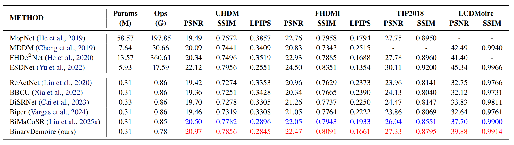
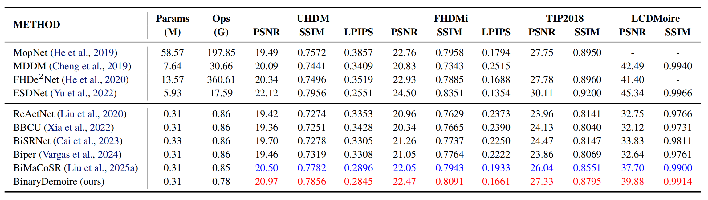
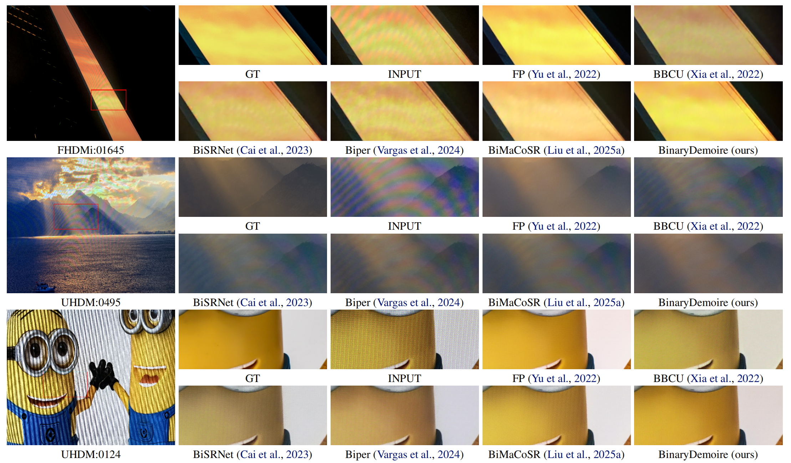
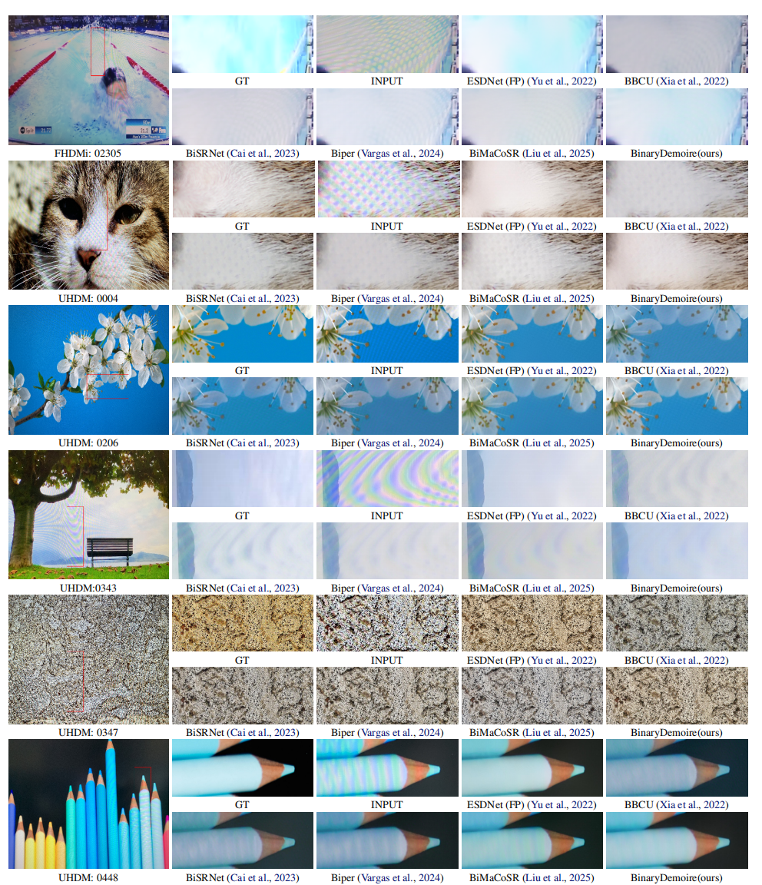

- Quantitative Results (Tab. 2 of the main paper)

Visual comparison of binarization methods. Our proposed BinaryDemoire outperforms other methods with accurate results.
Image demoiréing aims to remove structured moiré artifacts in recaptured imagery, where degradations are highly frequency-dependent and vary across scales and directions. While recent deep networks achieve high-quality restoration, their full-precision designs remain costly for deployment. Binarization offers an extreme compression regime by quantizing both activations and weights to 1-bit. Yet, it has been rarely studied for demoiréing and performs poorly when naively applied. In this work, we propose BinaryDemoire, a binarized demoiréing framework that explicitly accommodates the frequency structure of moiré degradations. First, we introduce a moiré-aware binary gate (MABG) that extracts lightweight frequency descriptors together with activation statistics. It predicts channel-wise gating coefficients to condition the aggregation of binary convolution responses. Second, we design a shuffle-grouped residual adapter (SGRA) that performs structured sparse shortcut alignment. It further integrates interleaved mixing to promote information exchange across different channel partitions. Extensive experiments on four benchmarks demonstrate that the proposed BinaryDemoire outperforms the state-of-the-art binarization methods.

BinaryDemoire consists of two key components: (1) Moiré-aware binary gate (MABG): Adapts binary activation through frequency and statistical descriptors; (2) Shuffle-grouped residual adapter (SGRA): Provides lightweight residual alignment across channel and spatial dimensions.
BinaryDemoire outperforms existing Binarization methods across multiple metrics.BinaryDemoire uses 0.31M parameters and 0.78G OPs, which correspond to only 5.2% of the full-precision base model parameters and 4.4% of its OPs.



@article{chen20binarydemoire,
title={BinaryDemoire: Moiré-Aware Binarization for Image Demoiréing},
author={Chen, Zheng and Zhang, Kewei and Liu, Xiaoyang and Zhang, Weihang and Wang, Mengfan and Fu, Yifan and Kong, Linghe and Zhang, Yulun},
journal={arXiv preprint arXiv:2602.03176},
year={2026}
}